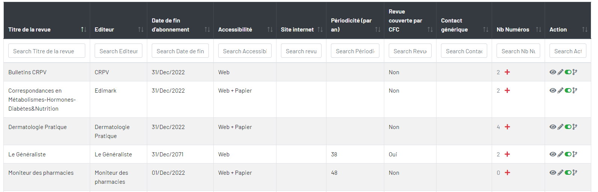
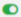
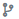

Revues scientifiques
« Revues scientifiques » contient toutes les revues et ses numéros. Vous pouvez ajouter, modifier, désactiver, activer, visualiser des revues, ses numéros, des rapports. Vous pouvez visualiser les détails d’extraction de texte avec les mots-clés trouvés

- Ajouter un revue.
- Visualiser l'revue.
 Nombre de numéros de la revue.
Nombre de numéros de la revue. Ajouter une numéros.
Ajouter une numéros.- Modifier d'un revue.
-  Désactiver ou activez un revue.
-  Historique des modifications d'un revue.